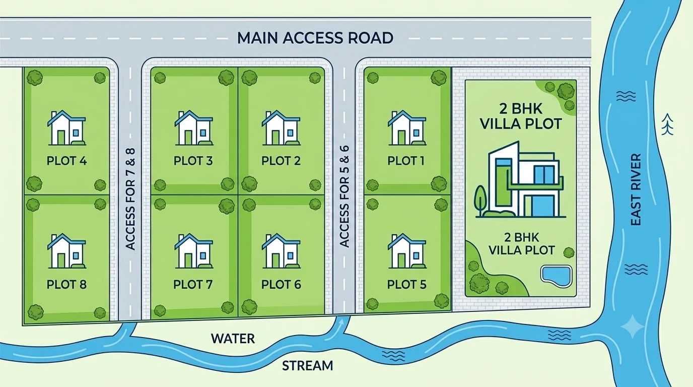
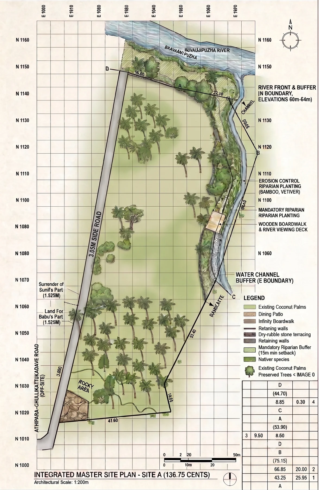

PLOT 01
Direct river vista
North edge · river-facing. Plot 01 is the plot identified for the direct river vista.

A compact enclave with direct road access, stream proximity and a prized river-facing edge.
The conceptual plan illustrates internal access, plot positioning and the relationship between the site, stream and river.
North edge · river-facing. Plot 01 is the plot identified for the direct river vista.
Direct road access from the internal circulation.
Via access road, with stream proximity.
The integrated master site plan shows the site geometry, water channel, river edge, existing vegetation and road relationship in greater detail.
The site and layout drawings are conceptual/illustrative references. Confirm legal boundaries, dimensions, access and development requirements from the relevant documents before purchase or construction.

The project vision is intentionally flexible: owners retain the freedom to shape a home that responds to the site and their own use case.
Discuss a plot →